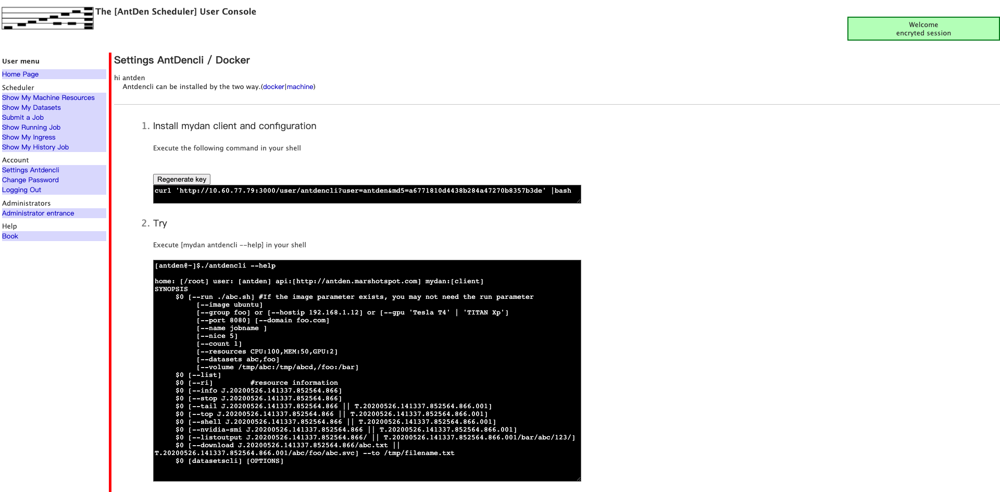

1. 快速安装
1.1. 安装前提
安装了docker
1.2. 下载AntDen代码
git clone https://github.com/data-o/AntDen
- 服务是在容器中运行的，下载代码时使用的用户最好是和容器服务是同一个用户，否则可能会出现文件权限的问题。
1.3. 启动服务
cd AntDen
./control srv up -d
- 服务启动过程需要下载镜像和依赖，根据不同的网络情况，可能需要几分钟的时间。
1.4. 通过页面访问服务
- http://ip:3000
- 默认管理员用户： 用户名 antden 密码 changeme

- 添加机器到集群中
- 根据settings中的步骤配置本地客户端

- 使用客户端

1.5. 启动elk服务(可选)
cd AntDen
./control elk up -d
- http://ip:5601
- 默认用户： 用户名 antden 密码 changeme
- 在Management/Kibana/Index patterns 中添加 index: antden-*
- 在Management/Kibana/Saved Objects 中导入 AntDen/docker/docker-elk/antden-dashboard.ndjson 看板